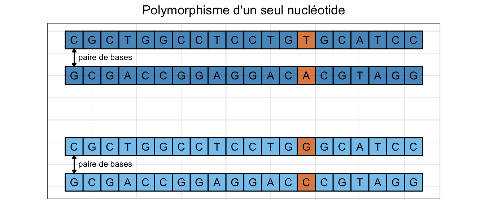

THÈSE
Keurcien LUU
31 octobre 2017
Chapter 1 Introduction
1.1 La génétique des populations
1.1.1 L’évolution comme point de départ
« La génétique est la science de l’hérédité. Elle est la clé de toute la biologie, parce qu’elle explique les mécanismes qui sont responsables de la reproduction des êtres vivants, du fonctionnement et de la transmission du matériel héréditaire, des différences entre les individus, de l’évolution biologique. »
Cette définition, donnée par Cavalli-Sforza et traduite ici de l’italien par Françoise Brun (L. Cavalli-Sforza, 1994), restitue également les motivations à l’origine de l’émergence du domaine de la génétique des populations, à savoir l’étude de la variabilité interindividuelle d’un point de vue évolutionniste. Pour John H. Gillespie, il s’agit de la « discipline qui fait le lien entre la génétique et l’évolution » (Gillespie, 2010) : « La génétique des populations s’intéresse à l’évolution d’un point de vue génétique. Elle diffère de la biologie en ce que ses idées les plus importantes ne sont pas expérimentales ou observationnelles mais davantage théoriques. Il pourrait difficilement en être autrement. Les objets d’étude sont principalement la fréquence et la valeur sélective des génotypes dans les populations naturelles. »
Malgré cette caractérisation, les fondements de la génétique des populations trouvent en réalité leurs origines bien avant la formalisation en 1909 par Wilhelm Johannsen du concept même de gène (Roll-Hansen, 2014), en témoignent les travaux de Charles Darwin (1809-1882) et de Gregor Mendel (1822-1884). L’Origine des espèces, publié en 1859 et considéré encore à ce jour comme le texte fondateur de la théorie de l’évolution (Darwin, 1980), énonce les premiers principes de la sélection naturelle. Les travaux de Mendel, figurent quant à eux parmi les premiers à se pencher sur les mécanismes de l’hérédité d’un point de vue statistique, notamment via l’étude de phénotypes en termes de proportions et de fréquences.
1.2 À l’origine de la variabilité génétique
1.2.1 La théorie de l’évolution
En 1859, Darwin soutenait l’idée selon laquelle la principale force évolutive serait la sélection naturelle (Darwin, 1980). « Je me propose de passer brièvement en revue les progrès de l’opinion relativement à l’origine des espèces. Jusque tout récemment, la plupart des naturalistes croyaient que les espèces sont des productions immuables créées séparément. De nombreux savants ont habilement soutenu cette hypothèse. Quelques autres, au contraire, ont admis que les espèces éprouvent des modifications et que les formes actuelles descendent de formes préexistantes par voie de génération régulière. »
C’est de cette manière qu’en 1920, Edmond Barbier, dans sa notice relative à la traduction française de L’Origine des espèces (Darwin, 1980), décide de présenter le contexte dans lequel il a été amené à effectuer ce travail de traduction. Bien qu’elle fut globalement bien accueillie par la communauté scientifique, sa théorie fut tout de même en proie à de nombreuses critiques. L’une des principales critiques émises à son encontre fut relative à la croyance de Darwin selon laquelle l’hérédité par mélange serait le principal mode de transmission des caractères héréditaires (Gayon, 1992). Or, si sélection naturelle il y a, la conservation et la transmission des caractères sélectionnés sont essentielles. Si bien qu’une hérédité par mélange n’est pas envisageable pour soutenir la thèse de la sélection naturelle, puisque tout caractère transmis de cette façon se verrait altéré (ou dilué si l’on souhaite conserver l’idée de mélange) à chaque génération et donc éliminé après un certain temps. Cependant, sa théorie bénéficiera par la suite des travaux de Mendel qui, lors de leur redécouverte en 1902 (Bateson & Mendel, 1913), apporteront l’élément fondamental manquant à la théorie darwinienne : le principe d’hérédité mendélienne. Cette théorie de l’évolution néo-darwinienne, née de la conciliation de la théorie darwinienne et du principe d’hérédité de Mendel, constitue le paradigme évolutionniste tel que nous le connaissons aujourd’hui et porte le nom de théorie synthétique de l’évolution.
1.2.2 L’évolution d’une théorie
À la théorie néo-darwinienne est souvent opposée la théorie neutraliste développée par Motoo Kimura dans son ouvrage The neutral theory of molecular evolution (Kimura, 1983), bien que ces deux théories ne soient pas incompatibles. La première suggère que les mutations apparaissent à la faveur de la sélection naturelle. La seconde affirme quant à elle que l’évolution ne serait que le résultat de mutations qui surviennent de façon tout à fait aléatoire, tout en étant sélectionnées selon le même mécanisme de sélection naturelle proposé par Darwin.
Figure 1.1: Représentation schématique des probabilités d’occurrence pour chaque type de mutation pour la théorie sélectionniste de Darwin et pour la théorie neutraliste de Kimura (Bromham & Penny, 2003).
Une des composantes principales de cette nouvelle théorie consiste à affirmer que les fluctuations aléatoires dans les fréquences d’allèle, n’affectant que très peu ou pas du tout la valeur sélective, constituent la principale source de variabilité de l’ADN (B. Charlesworth & Charlesworth, 2009). Une grande partie de la variation génétique observée est fonctionnellement neutre et n’occasionne pas de changement de phénotype.
L’approbation de cette théorie, bien que conceptuellement intéressante, aura un retentissement beaucoup plus important d’un point de vue méthodologie statistique. La formulation d’une hypothèse permettant de décrire un processus évolutif en l’absence de sélection, portant généralement le nom de modèle neutre, est souvent de première nécessité dans toute démarche visant à caractériser un mécanisme de sélection. La donnée d’observations mettant en défaut le modèle neutre aura pour conséquences de créditer davantage une hypothèse invoquant un processus de sélection. Historiquement, la statistique \(D\) de Tajima fut l’une des premières statistiques développées à partir d’une hypothèse nulle bâtie pour les mutations neutres (Tajima, 1989).
1.2.3 Forces évolutives
Ce changement de paradigme nous invite de ce fait à observer la sélection naturelle à travers le prisme de la théorie neutraliste, et donc à identifier les mutations sélectives comme des mutations dont les origines ne peuvent être uniquement expliquées par des processus biologiquement neutres. La génétique des populations distingue trois types de processus neutres qui, tout comme la sélection naturelle, constituent les principales forces évolutives.
- La dérive génétique
La dérive génétique est un concept essentiel en génétique des populations, et correspond . Le principe de dérive génétique est illustré en figure 1.2, à l’aide du modèle de Wright-Fisher tel qu’il est présenté dans l’ouvrage Population Genetics (Gillespie, 2010).

Figure 1.2: Simulation numérique de la dérive génétique. La fréquence de l’allèle étudié est simulée pour 5 populations constituées chacune de 20, 100 ou 1000 individus sur une période de 100 générations. Dans chaque population, la fréquence de l’allèle est initialement de 0.20 (Gillespie, 2010).
En particulier, la figure 1.2 met en évidence deux caractéristiques de la dérive génétique :
Les fréquences alléliques évoluent de façon indépendante d’une population à une autre.
Pour un nombre de générations fixé, la dérive génétique entraîne une perte de diversité allélique plus rapidement au sein des populations de plus petite taille. Dans le modèle de Wright-Fisher, les fréquences alléliques finissent éventuellement par atteindre les états dits absorbants que sont 0 et 1.
- Les mutations aléatoires
Si la dérive génétique entraîne une perte de diversité allélique, les mutations favorisent quant à elles le maintien des variations génétiques entre les populations (Gillespie, 2010). Les mutations apparaissent principalement lors de la phase de réplication de l’ADN. Une mutation peut survenir à un locus donné avec une probabilité spécifique à chaque espèce (J. W. Drake, Charlesworth, Charlesworth, & Crow, 1998), appelée taux de mutation.
| Espèce | Taux de mutation |
|---|---|
| E. coli | 5.4e-10 |
| C. elegans | 2.3e-10 |
| Drosophile | 3.4e-10 |
| Souris | 1.8e-10 |
| Homme | 5.0e-11 |
- Le flux de gène
Le flux de gène est le résultat d’évènements migratoires, initiés par des individus appartenant à une population donnée, vers une seconde population dont le pool génique diffère éventuellement de la population d’origine. Le flux de gène influe instantanément sur la diversité génétique initialement présente, soit parce que les allèles migrants n’arrivent pas dans les mêmes proportions que celles qui sont établies dans la population receveuse, soit parce que parmi les allèles migrants figurent des allèles qui n’existaient tout simplement pas dans la population receveuse.
- La sélection naturelle
En biologie évolutive, la sélection naturelle est la force évolutive qui tend à préserver les allèles conférant des avantages quant à la survie d’un individu ou d’une espèce. Elle agit sur les traits qui sont héritables. La grande majorité de ces traits sont transmis aux descendants en suivant le mécanisme d’hérédité génétique. Cependant, d’autres aspects de la biologie d’un organisme peuvent se transmettre via des mécanismes différents, comme certains comportements culturels ou caractéristiques de l’environnement qui ont été façonnées par les populations ancestrales (Gerbault et al., 2011).
1.2.4 Adaptation locale
La diversité climatique et la diversité géologique terrestre ont naturellement façonné des environnements aux propriétés physiques et chimiques variées. À celles-ci viennent s’ajouter des caractéristiques écologiques résultant des interactions entre l’environnement et les organismes qui y évoluent lato sensu. Une population sera dite adaptée à son environnement si elle développe, par le biais de la sélection naturelle, un ou plusieurs allèles augmentant la valeur sélective des individus la constituant, en réponse aux pressions environnementales auxquelles ces individus sont soumis. À titre d’exemple, nous pouvons citer l’adaptation des populations tibétaines et andines à la haute altitude (C. M. Beall, 2007).
| Trait | Andins | Tibétains |
|---|---|---|
| Augmentation du taux d’hémoglobine | oui | à partir de 4000m d’altitude |
| Augmentation de la pression artérielle pulmonaire | oui | non |
| Augmentation de la ventilation au repos | oui | non |
| Prévalence du mal chronique des montagnes | 5% | 1% |
Chez l’Homme moderne, les habitudes alimentaires et les modes de vie constituent également des caractéristiques environnementales importantes. L’agriculture et le pastoralisme1 ont notamment participé à la diversification des environnements humains (Jeong & Di Rienzo, 2014). En Europe, l’adaptation biologique à ces nouveaux modes de vie s’est par ailleurs manifesté par la sélection du phénotype LP, dit de persistence de la lactase, caractérisant l’aptitude à digérer le lactose à l’âge adulte (Itan, Powell, Beaumont, Burger, & Thomas, 2009).
Environnement hétérogène
1.3 Données de polymorphismes génétiques
Le séquençage de l’ADN consiste à déterminer l’ordre dans lequel sont agencées les paires de bases pour un fragment d’ADN donné. Son apparition a offert de nouvelles voies d’exploration en biologie évolutive. Les variations génétiques étaient jusqu’alors appréciées par le biais des différences phénotypiques. En phylogénie par exemple, le séquençage de l’ADN a donné naissance à la phylogénétique moléculaire, qui se distingue de la phylogénétique traditionnelle en ce qu’elle ne considère que les séquences de nucléotides pour évaluer la proximité entre deux espèces. Et c’est précisément l’accès à ces séquences qui va permettre à toute une population de méthodologies statistiques de voir le jour et de se développer.
1.3.1 Des données en grande dimension
Le séquençage nouvelle génération (appelé encore séquençage à haut débit) a connu un essor considérable au cours des dernières décennies. Si bien que les prouesses techniques et les progrès technologiques réalisés dans ce domaine ont permis de réduire d’un facteur 100,000 les coûts de séquençage en l’espace de seulement 15 ans (Wetterstrand, 2013).
Toutefois, compte tenu de la popularité croissante des technologies NGS (Muir et al., 2016) et des considérables volumes de données qu’elles génèrent, de nouvelles problèmatiques se posent quant à leur stockage et leur analyse, nécessitant l’utilisation de puissantes ressources de calcul ainsi que le développement d’algorithmes plus adaptés (Gogol-Döring & Chen, 2012).
D’un point de vue statistique, l’accumulation de données, aussi bien en termes d’observations qu’en termes de variables, tend à opacifier la limite, si elle existe, entre ce qui relève du signal que l’on cherche à détecter, et ce qui n’en relève pas. Ce phénomène bien connu en statistiques porte le nom de fléau de la dimension (Giraud, 2014).
Figure 1.3: Évolution des coûts de séquençage depuis 2001 (Wetterstrand, 2013).
1.3.2 Les marqueurs génétiques
Le séquençage de l’ADN a également permis de faire évoluer le concept de marqueur génétique. Un marqueur génétique correspondait autrefois à un gène polymorphe2 identifié sur la base d’observations phénotypiques. Grâce au séquençage de l’ADN, une nouvelle définition tenant compte de la position sur le chromosome a été adoptée pour caractériser un marqueur génétique. Différents types de marqueurs génétiques ont été identifiés, parmi lesquels figurent les microsatellites, les insertions, les délétions et les SNPs3. La structure spatiale de l’ADN n’étant pas prise en compte dans les travaux présentés ici, nous en garderons une représentation unidimensionnelle.
- Microsatellite :
Jusqu’à présent, les microsatellites ont connu un succès important, notamment grâce à la popularisation de techniques telles que la PCR (Réaction en Chaîne par Polymérase). Cependant, grâce aux nouvelles avancées technologiques que nous évoquerons un peu plus loin, ils sont progressivement délaissés au détriment des SNPs.

Figure 1.4: Exemples de microsatellites. Un microsatellite est repérable par la répétition successive de petits motifs chacun composé de 1 à 4 acides aminés. La première séquence comporte 3 répétitions du motif CCG, tandis que la seconde inclut 4 répétitions du motif CA.
- Indel :

Figure 1.5: L’insertion ou la délétion d’une base constituent également des polymorphismes génétiques. Relativement à une séquence de nucléotides de référence, une insertion consiste en la présence d’une base supplémentaire tandis que la délétion consiste en l’absence d’une base.
- Polymorphisme d’un seul nucléotide (SNP) :
Le polymorphisme d’un seul nucléotide correspond au polymorphisme génétique le plus simple, et correspond à l’emplacement d’un nucléotide présentant des variations appréciables à l’échelle d’une population.

1.4 Introgression adaptative
1.4.1 Qu’est-ce que l’introgression ?
Avant de s’intéresser à la notion d’introgression, intéressons-nous d’abord à celle d’hybridation. L’hybridation peut être définie comme la reproduction entre deux individus appartenant à deux espèces ou à deux populations différentes. Cette définition nous amène à nous poser deux questions. La première, relative à la notion d’espèce, est souvent sujette à controverse. La seconde concerne quant à elle la désignation de populations différentes. Qu’est-ce qui fait que deux groupes d’individus sont différents ? Harrison suggère en 1990 que deux individus issus de populations différentes doivent chacun posséder des traits héritables qui les différencient (Harrison & others, 1990).
Nous parlons d’introgression lorsqu’un certain nombre de gènes est transféré d’une population à une autre.
L’étude de régions génomiques présentant des caractéristiques d’introgression ou de divergence peut se révéler intéressante pour plusieurs raisons.
1.5 Les motivations de la thèse
La production de données génétiques, volumineuses par la quantité d’information qu’elles renferment, laisse présager le meilleur pour les domaines de la médecine clinique et de la biologie évolutive, pourvu qu’une attention particulière soit prêtée au traitement informatique et statistique de ces données. En génétique des populations, leur acquisition offre de nombreuses perspectives d’étude, notamment concernant la mise en évidence de marqueurs génétiques impliqués dans les processus évolutifs. Les méthodes répondant à cette problématique portent le nom de scans génomiques.
References
Cavalli-Sforza, L. (1994). Francesco. qui sommes-nous? Une histoire de diversité humaine. Trans. Brun, Françoise. Flammarion Ed. Paris: Centre National Des Lettres.
Gillespie, J. H. (2010). Population genetics: A concise guide. JHU Press.
Roll-Hansen, N. (2014). The holist tradition in twentieth century genetics. wilhelm johannsen’s genotype concept. The Journal of Physiology, 592(11), 2431–2438.
Darwin, C. (1980). L’Origine des espèces, trad. Edmond Barbier (1876), Paris, Maspero.
Gayon, J. (1992). Darwin et l’après-darwin: Une histoire de l’hypothèse de sélection dans la théorie de l’évolution. Kimé.
Bateson, W., & Mendel, G. (1913). Mendel’s principles of heredity. University press.
Kimura, M. (1983). The neutral theory of molecular evolution. Cambridge University Press.
Bromham, L., & Penny, D. (2003). The modern molecular clock. Nature Reviews. Genetics, 4(3), 216.
Charlesworth, B., & Charlesworth, D. (2009). Darwin and genetics. Genetics, 183(3), 757–766.
Tajima, F. (1989). Statistical method for testing the neutral mutation hypothesis by dna polymorphism. Genetics, 123(3), 585–595.
Drake, J. W., Charlesworth, B., Charlesworth, D., & Crow, J. F. (1998). Rates of spontaneous mutation. Genetics, 148(4), 1667–1686.
Gerbault, P., Liebert, A., Itan, Y., Powell, A., Currat, M., Burger, J., … Thomas, M. G. (2011). Evolution of lactase persistence: An example of human niche construction. Philosophical Transactions of the Royal Society of London B: Biological Sciences, 366(1566), 863–877.
Beall, C. M. (2007). Two routes to functional adaptation: Tibetan and andean high-altitude natives. Proceedings of the National Academy of Sciences, 104(suppl 1), 8655–8660.
Jeong, C., & Di Rienzo, A. (2014). Adaptations to local environments in modern human populations. Current Opinion in Genetics & Development, 29, 1–8.
Itan, Y., Powell, A., Beaumont, M. A., Burger, J., & Thomas, M. G. (2009). The origins of lactase persistence in europe. PLoS Computational Biology, 5(8), e1000491.
Wetterstrand, K. A. (2013). DNA sequencing costs: Data from the nhgri genome sequencing program (gsp).
Muir, P., Li, S., Lou, S., Wang, D., Spakowicz, D. J., Salichos, L., … others. (2016). The real cost of sequencing: Scaling computation to keep pace with data generation. Genome Biology, 17(1), 53.
Gogol-Döring, A., & Chen, W. (2012). An overview of the analysis of next generation sequencing data. Next Generation Microarray Bioinformatics: Methods and Protocols, 249–257.
Giraud, C. (2014). Introduction to high-dimensional statistics (Vol. 138). CRC Press.
Harrison, R. G., & others. (1990). Hybrid zones: Windows on evolutionary process. Oxford Surveys in Evolutionary Biology, 7, 69–128.